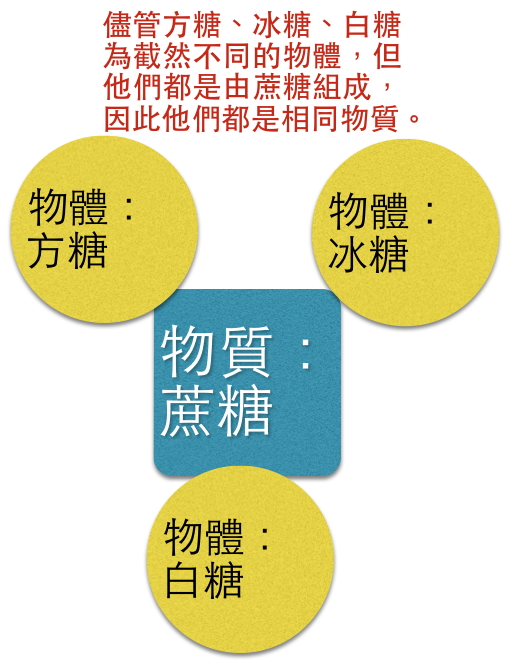
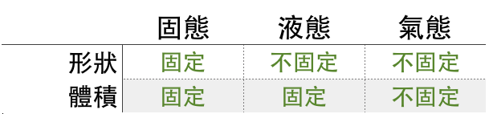

物質的世界
World of Substance
我們日常生活中接觸到了擁有數以萬計的物體，而他們又有什麼奧秘？讓我們繼續探索。



如：三態變化...
如： 氧化還原反應、光合作用、呼吸作用、消化作用...
如：紙張燃燒後變成灰燼，灰燼與紙張是截然不同的物質，因此也有不同的性質。
如：延展性、導電性
如：爆炸性、活性
如：葡萄糖、純水、金...
如：生理食鹽水(食鹽、水)、運動飲料(水、砂糖、食鹽)等...